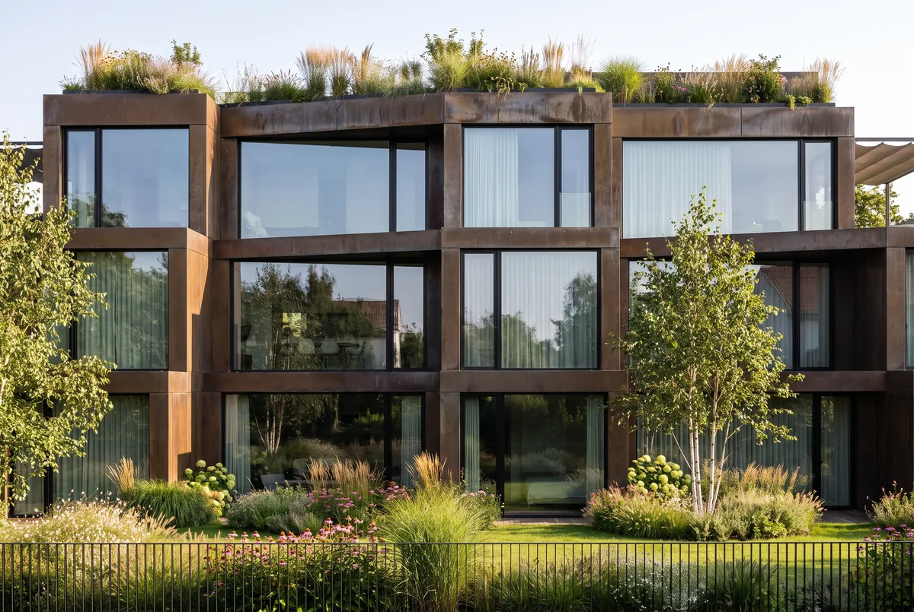

Nico & Kai Development
Domov, na který se těšíte.
Stavíme domy pro skutečný život. Ne metry čtvereční, ale místa, kam se chcete vracet. V Praze i v horách.
01 Kdo jsme
Neprodáváme byty. Vytváříme místa, kde se žije dobře. Promyšlená architektura, poctivé materiály a otevřená komunikace od první schůzky po předání klíčů.
02 Projekty
Našedomy.
Dva domy v Praze-Modřanech právě v předprodeji, horské apartmány s posledními třemi jednotkami a dokončená rezidence, která je naší vizitkou.

Rezidence ke Schodům
Osm bytů s terasami a zahradami, pohledový beton a dům, který si vyrábí energii. Rezervace se slevou až 5 %.
Vybrat byt →
Rezidence Do Čtvrti
Nárožní dům se zaoblenými rohy a perforovanou cihlou. Jen dva byty na podlaží. Rezervace se slevou až 5 %.
Vybrat byt →
Apartmány Vysoké
Horské apartmány s terasami, společnou zahradou a jezírkem. Prodej posledních jednotek zajišťuje Svoboda & Williams.
Volné apartmány →
Rezidence Vlnitá
Dokončený dům, který nám ukázal, že detail rozhoduje. Zůstává jako naše vizitka.
Prohlédnout →03 Jak stavíme
Jednoduše,poctivě, natrvalo.

Každý byt má kus nebe.
Zahrada, terasa nebo balkon. Nestavíme dům, kde se venku jen parkuje. Obytné místnosti míří na jih, do zeleně, a venkovní prostor počítáme jako další pokoj.

Materiály, které stárnou krásně.
Pohledový beton, dřevo, omítky v teplých tónech, cihla a sklo. Méně prvků, zato lepších. Nic, co se za pár let musí vyměnit.

Důvěra se staví stejně jako dům.
Srozumitelné informace, jasné termíny a přímý kontakt na lidi, kteří za projektem stojí. Když se něco změní, dozvíte se to od nás jako první.
04 Reference a partneři
Dva domy jsme už dokončili a předali. Dva další navrhujeme s ateliérem JA Architekti, který má za sebou desítky realizací.